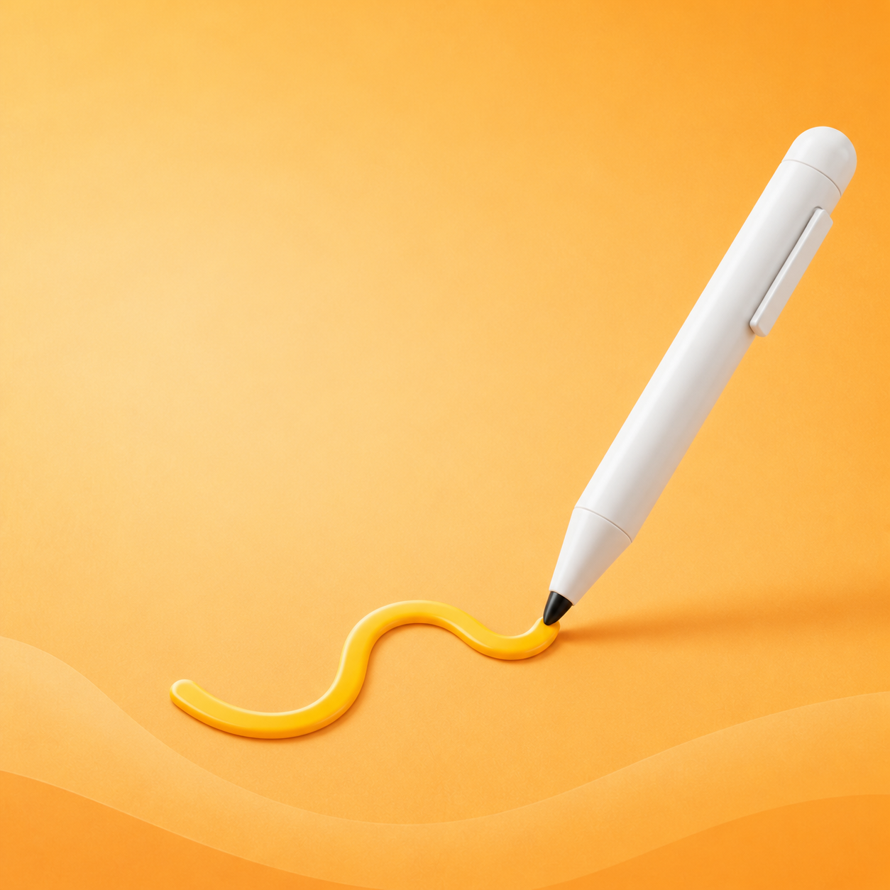
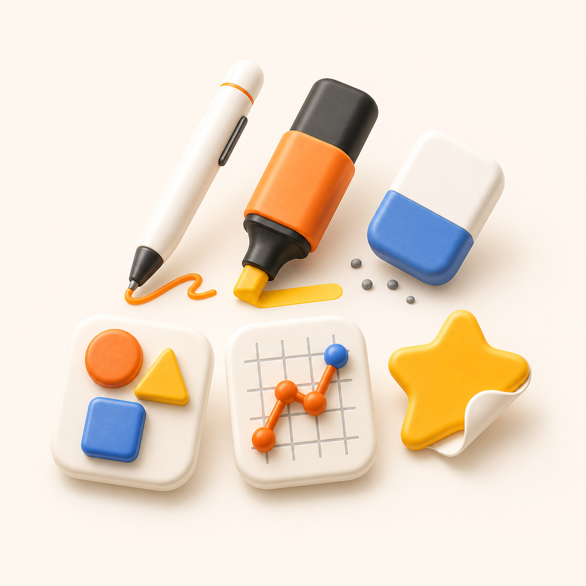
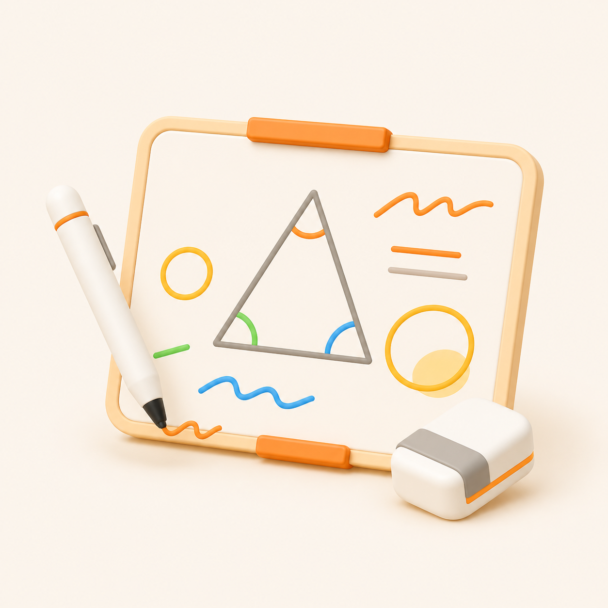
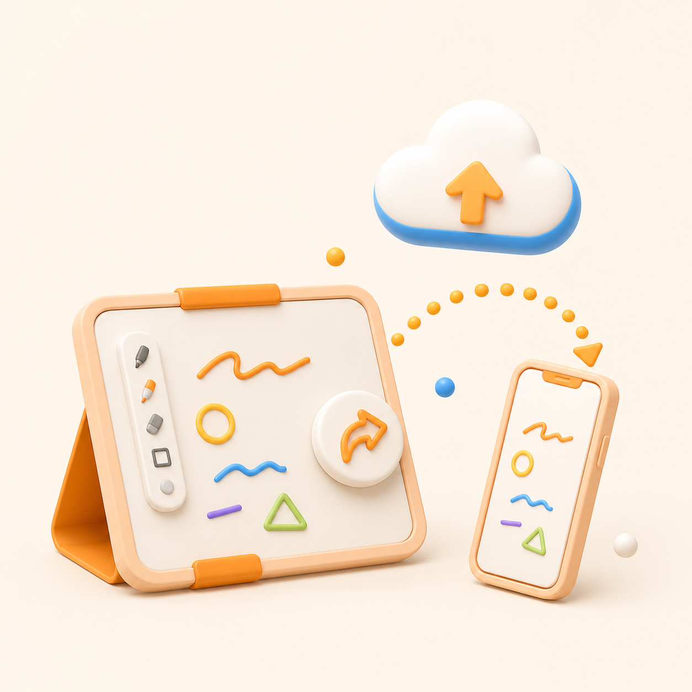
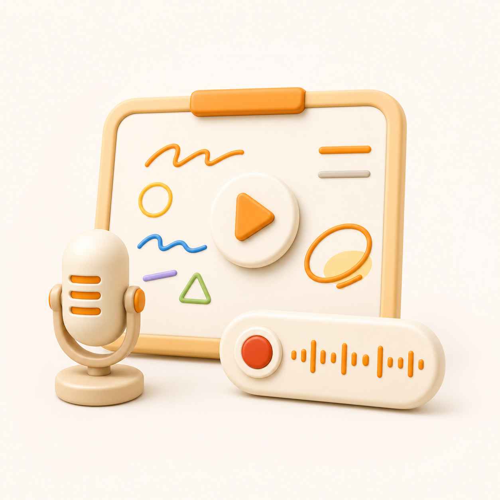
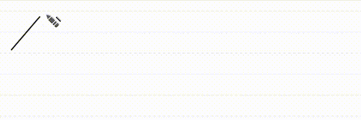
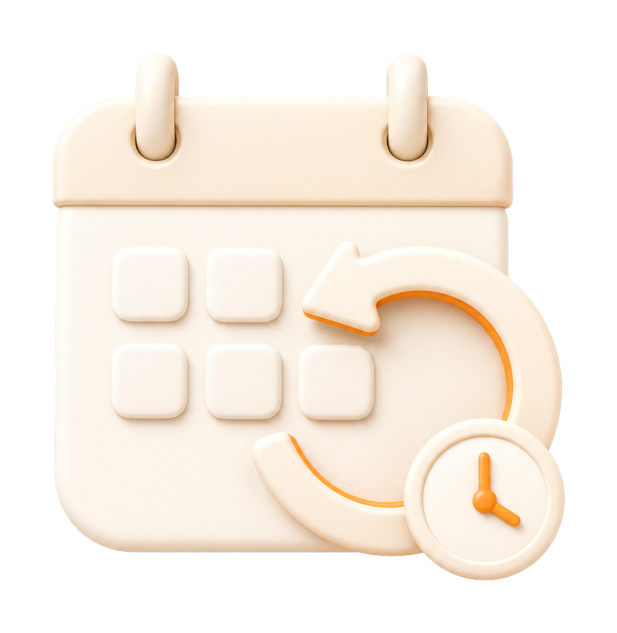
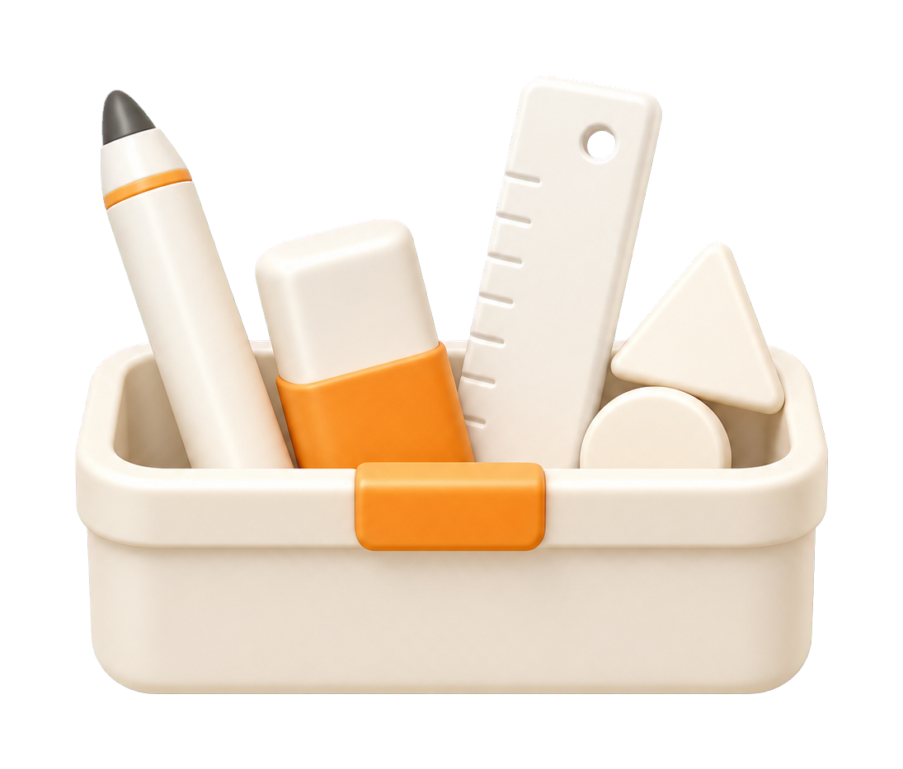
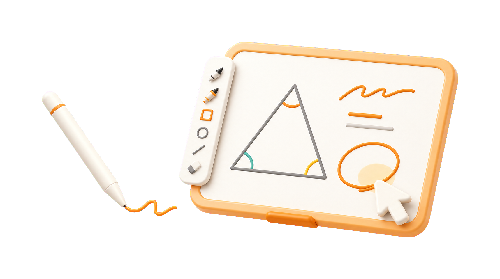

WHY ICANNOTE
수업 자료 위에 바로 쓰고 저장·공유까지 이어지는 핵심 기능들
PDF, PPT, 이미지 등 익숙한 수업 자료 위에 바로 판서하고, 설명하고, 저장·공유까지 이어지는 아이캔노트의 강력한 기능을 경험해 보세요.
18가지 수업 도구
펜, 형광펜, 도형, 그래프, 지우개, 스티커까지 수업에 맞게 자유롭게 사용해요.

다양한 파일 지원
PDF, HWP, PPT, DOC, 이미지 등 여러 형식의 수업 자료를 한 화면에서 활용해요.
화이트보드 기능
빈 화면에 자유롭게 쓰고 그리며 칠판처럼 수업을 진행할 수 있어요.

저장 & 공유
작성한 필기를 저장하고, 다른 기기에서도 다시 불러와 이어서 사용할 수 있어요.

녹화 & 복습 지원
수업 화면과 음성을 함께 기록해 강의 녹화와 복습 자료로 활용할 수 있어요.

직관적인 도구, 완벽한 수업
필요한 도구를 모두 담다
아이캔노트는 판서, 도형, 그래프, 텍스트 입력까지 수업에 필요한 기능을 한곳에 담아 설명 흐름을 끊지 않고 자연스럽게 수업을 이어갈 수 있도록 돕습니다.

펜과 형광펜으로 핵심 내용을 쓰고, 밑줄 치고, 강조할 수 있습니다.
9만+
공식카페 가입자
공식카페 커뮤니티

10년+
운영 기간
교육 현장에서 이어온 판서 도구

18가지
수업 도구 지원
펜·도형·그래프·텍스트까지
자료 위에 바로 쓸 수 있나요?
수업이 끝난 뒤에도 공유할 수 있나요?
판서부터 녹화·공유까지
판서부터 녹화·공유까지
수업의 흐름을 한 번에
아이캔노트는 수업 자료 위 판서부터 저장, 녹화, 공유까지 자연스럽게 이어지는 디지털 판서 프로그램입니다.
수업 자료가 곧 판서 노트가 되는 흐름
-
01
자료 불러오기
PDF, PPT, 이미지 자료를
아이캔노트에 불러와요. -
02
바로 판서하기
펜, 도형, 포인터로
수업 중 핵심을 설명해요.
-
03
저장·녹화·공유
판서 내용을 저장하고
녹화 영상이나 복습 자료로 공유해요.
설명하는 순간은 더 선명하게, 남기는 과정은 더 간편하게.